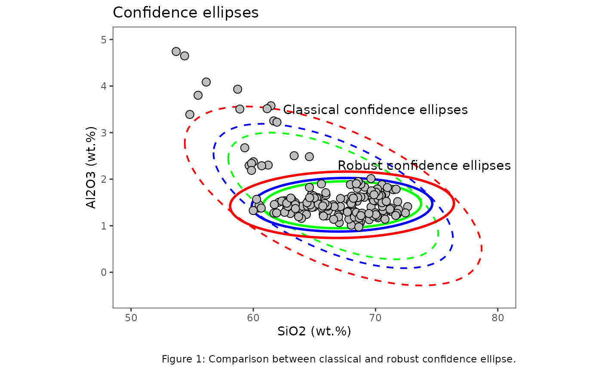

Confidence ellipses are extension of the concept of a confidence interval, which is used for a single variable. The ellipse is centered at the point representing the sample mean values of the two variables. Its size and shape are determined by the chosen confidence level (e.g., 95%) and the covariance matrix.
data(glass, package = "ConfidenceEllipse")Coordinate points
The confidence_ellipse function is used to compute the
coordinate points of the confidence ellipse and then the ellipse is
plotted on a two-dimensional plot x and y of
the data. Points that lie within the ellipse are considered to be part
of the underlying distribution with the specified confidence level
conf_level.
ellipse99 <- confidence_ellipse(glass, x = SiO2, y = Al2O3, conf_level = 0.99)
ellipse95 <- confidence_ellipse(glass, x = SiO2, y = Al2O3, conf_level = 0.95)
ellipse90 <- confidence_ellipse(glass, x = SiO2, y = Al2O3, conf_level = 0.90)
ellipse99_rob <- confidence_ellipse(glass, x = SiO2, y = Al2O3, conf_level = 0.99, robust = TRUE)
ellipse95_rob <- confidence_ellipse(glass, x = SiO2, y = Al2O3, conf_level = 0.95, robust = TRUE)
ellipse90_rob <- confidence_ellipse(glass, x = SiO2, y = Al2O3, conf_level = 0.90, robust = TRUE)
ellipse99 %>% glimpse()
#> Rows: 361
#> Columns: 2
#> $ x <dbl> 54.39806, 54.39735, 54.40034, 54.40703, 54.41742, 54.43149, 54.44926…
#> $ y <dbl> 2.798453, 2.771520, 2.744243, 2.716628, 2.688685, 2.660423, 2.631849…
ggplot() +
geom_path(data = ellipse99, aes(x = x, y = y), color = "red", linewidth = 0.7, linetype = "dashed") +
geom_path(data = ellipse95, aes(x = x, y = y), color = "blue", linewidth = 0.7, linetype = "dashed") +
geom_path(data = ellipse90, aes(x = x, y = y), color = "green", linewidth = 0.7, linetype = "dashed") +
geom_path(data = ellipse99_rob, aes(x = x, y = y), color = "red", linewidth = 1L, linetype = "solid") +
geom_path(data = ellipse95_rob, aes(x = x, y = y), color = "blue", linewidth = 1L, linetype = "solid") +
geom_path(data = ellipse90_rob, aes(x = x, y = y), color = "green", linewidth = 1L, linetype = "solid") +
geom_point(data = glass, aes(x = SiO2, y = Al2O3), fill = "grey", color = "black", shape = 21, size = 3L) +
annotate("text", x = 70, y = 3.5, label = "Classical confidence ellipses", color = "black", size = 4) +
annotate("text", x = 74, y = 2.3, label = "Robust confidence ellipses", color = "black", size = 4) +
scale_color_brewer(palette = "Set1", direction = 1) +
xlim(50, 80) +
ylim(-.5, 5) +
labs(
x = "SiO2 (wt.%)",
y = "Al2O3 (wt.%)",
title = "Confidence ellipses",
caption = "
Figure 1: Comparison between classical and robust confidence ellipse."
) +
theme_bw() +
theme(
aspect.ratio = .7,
panel.grid = element_blank(),
legend.position = "none"
)
Group-based confidence ellipses
For grouping bivariate data, the .group_by argument can
be used if the data contains an unique grouping variable
(.group_by = NULL by default). When a grouping variable is
provided, the function will compute the ellipses separately for each
level of the factor. It’s important to note that the grouping variable
should be appropriately coded as a factor before passing it to the
.group_by argument. If the variable is currently stored as
a character or numeric type, you may need to convert it to a factor
using functions like as.factor() or
forcats::as_factor().
The function includes a distribution argument that
allows users to choose between two statistical approaches for ellipse
calculation:
- “normal” (default): Uses the chi-square distribution quantile
- “hotelling”: Uses Hotelling’s T² distribution quantile
ellipse_grp <- confidence_ellipse(glass, x = SiO2, y = Na2O, .group_by = glassType)
ellipse_grph <- confidence_ellipse(glass, x = SiO2, y = Na2O, .group_by = glassType, distribution = "hotelling")
ellipse_grp %>% print()
#> # A tibble: 1,444 × 3
#> x y glassType
#> <dbl> <dbl> <fct>
#> 1 59.6 14.7 1
#> 2 59.6 14.7 1
#> 3 59.6 14.6 1
#> 4 59.6 14.5 1
#> 5 59.6 14.5 1
#> 6 59.6 14.4 1
#> 7 59.6 14.3 1
#> 8 59.6 14.3 1
#> 9 59.7 14.2 1
#> 10 59.7 14.1 1
#> # ℹ 1,434 more rows
ellipse_grph %>% print()
#> # A tibble: 1,444 × 3
#> x y glassType
#> <dbl> <dbl> <fct>
#> 1 59.5 14.7 1
#> 2 59.5 14.7 1
#> 3 59.5 14.6 1
#> 4 59.5 14.5 1
#> 5 59.5 14.5 1
#> 6 59.5 14.4 1
#> 7 59.5 14.3 1
#> 8 59.5 14.3 1
#> 9 59.6 14.2 1
#> 10 59.6 14.1 1
#> # ℹ 1,434 more rows
p1 <- ggplot() +
geom_polygon(data = ellipse_grp, aes(x = x, y = y, fill = glassType), color = "black", alpha = .45) +
geom_point(data = glass, aes(x = SiO2, y = Na2O, color = glassType, shape = glassType), size = 3L) +
scale_fill_brewer(palette = "Set1", direction = 1) +
scale_color_brewer(palette = "Set1", direction = 1) +
labs(
x = "SiO2 (wt.%)",
y = "Na2O (wt.%)"
) +
theme_bw() +
theme(
panel.grid = element_blank(),
legend.position = "none"
)
p2 <- ggplot() +
geom_polygon(data = ellipse_grph, aes(x = x, y = y, fill = glassType), color = "black", alpha = .45) +
geom_point(data = glass, aes(x = SiO2, y = Na2O, color = glassType, shape = glassType), size = 3L) +
scale_fill_brewer(palette = "Set1", direction = 1) +
scale_color_brewer(palette = "Set1", direction = 1) +
labs(
x = "SiO2 (wt.%)",
y = "Na2O (wt.%)",
caption = "
Figure 2: Comparison between normal distribution (left) and Hotelling's T² distribution (right) ellipses."
) +
theme_bw() +
theme(
panel.grid = element_blank(),
legend.position = "none"
)
patchwork::wrap_plots(p1, p2, ncol = 2) +
patchwork::plot_annotation(
title = "Statistically-based confidence ellipses drawn around each group",
theme = theme(plot.title = element_text(hjust = 0.5))
)
As shown in the comparative plots, the difference between these approaches can be substantial, especially for smaller sample sizes. The Hotelling’s T² ellipses provide more realistic confidence regions that properly account for the fact that we’re estimating population parameters from sample data. As the sample size increases the differences between both approaches diminish.